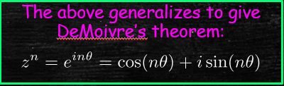

Advanced Calculus
Lecture 11
Jonathan Crofts
Nottingham Trent University
Advanced Calculus L11
- Introductory slides
- Revision of complex numbers
- Examples
Course Information
Lecturer: Dr Jonathan Crofts
New Hall Block: Room 233
Email: jonathan.crofts@ntu.ac.uk
Timetable
Lecturer: 11-12, Thursday ERD 161
Seminars: Group M1, P 1-2, Tuesday Pavillionm 025
Group M2 2-3, Tuesday TLB P08
Office hours
9:00-10:00 Monday
Module content
- Vector Calculus (TERM 1)
- Vector functions and vector fields
- Line and surface integrals
- Integral theorems:
- Green's theorem
- The divergence theorem
- Stoke's theorem
- Complex analysis (TERM 2)
- Calculus of complex functions
- Engineering applications
Reading list
- You will probably not need to buy a book for this module as notes are provided, as well as supplementary material during seminars and via the University's virtual learning service
- However, the following books cover most of the material to be presented as well as providing a good basis for additional reading and learning
- Jordan and Smith (2008), Mathematical techniques: an introduction for the engineering, physical and mathematical sciences
- Kent et al. (2012), Fundamentals of differential equations and boundary value problems
- Kwok (2010), Applied complex variables for scientists and engineers
Assessment
- The module consists of two elements
- January Exam (E1): element 1 is worth 50% and covers the first half of the module (PDEs and Fourier series)
- Summer Exam (E2): element 2 is worth 50% and covers the second half of the module (Complex Analysis)
Advanced Calculus L11
- Module overview/assessment
- Revision of complex numbers
- Examples
Revision of complex numbers
Let us recall some basic notations/definitions:- Complex numbers are denoted by the letter $z$ traditionally
- $z\in\mathbb{C}$ means $z$ is complex where $\mathbb{C}$ denotes the set of complex numbers
- The imaginary unit $i=\sqrt{-1}$ or $i^2=-1$
- There are a variety of ways to represent complex
numbers as can be seen from the figure

Referring to the figure, a complex number $z$
can be written as
Alternatively, the position $z$ in the Argand diagram can be expressed in polar coordinates
\[
\mathbf{r} = (x,y); \quad x=r\cos\theta, y=r\sin\theta; r = \sqrt{x^2+y^2}=|z|
\]
and $\theta=\tan^{-1}(y/x)$.
Here
\[
z = r\cos\theta +ir\sin\theta
\]

Adopting the Cartesian representation and setting \[ z_1 = x_1+iy_1 \quad\text{and}\quad z_2=x_2+iy_2 \] we have
- Equality: $z_1=z_2$ iff $x_1=x_2$ and $y_1=y_2$
- Addition/Subtraction: $z_1\pm z_2 = (x_1\pm x_2)+i(y_1\pm y_2)$
- Multiplication:
- $k\in\mathbb{R}: kz = kx+iky \qquad (\text{scalar multiplication})$
- $$z_1z_2 = (x_1+iy_1)(x_2+iy_2) = (x_1x_2-y_1y_2)+i(x_1y_2+x_2y_1)$$
Other important operations include
- Modulus$~|z|=|x+iy|=\sqrt{x^2+y^2}$
- Conjugation $$\begin{align*} & \overline{z} = x-iy\quad z\overline{z}=x^2+y^2=|z|^2\\ &\overline{z_1z_2}=\overline{z_1}\cdot\overline{z_2}\quad |\overline{z}|=|z|\\&\overline{z_1+z_2} = \overline{z_1}+\overline{z_2} \end{align*}$$
- Inverse $$z^{-1}=\frac{1}{x+iy}=\frac{x-iy}{x^2+y^2}$$

Related to the idea of computing an inverse ...
- Division $\displaystyle \frac{z_1}{z_2} = z_1z_2^{-1}$, so using our previous result we have \[ \begin{align*} \frac{z_1}{z_2} &= \frac{(x_1+iy_1)(x_2-iy_2)}{x_2^2+y_2^2}\\ &= \frac{x_1x_2+y_1y_2+i(x_2y_1-x_1y_2)}{x_2^2+y_2^2} \end{align*} \]
Note Unlike real numbers complex numbers cannot be ordered, and so, for example, it makes no sense to say \[ z_1>z_2 \] Akin to vectors. (Compare $|z_1|>|z_2|, \mathrm{Re}(z_1)>\mathrm{Re}(z_2)~etc.$)
Exponential form
Employing our notation from earlier we can write
\[ z = |z|(\cos\theta +i\sin\theta) \]Now, expressing $\cos$ and $\sin$ in exponential form gives
\[ z = |z|\left(\frac{e^{i\theta}+e^{-i\theta}}{2}+i\frac{e^{i\theta}-e^{-i\theta}}{2}\right) = |z|e^{i\theta} \]From the above we immediately see
\[ e^{i\theta} = \cos\theta +i\sin\theta, \]which is Euler's formula
The different representations of complex numbers are useful when considering different algebraic operations
- The algebraic form $x+iy$ is convenient for addition/subtraction
- The polar form is more convenient for multiplication/division
For example, let
\[ z_1 = r_1(\cos\theta_1+i\sin\theta_1)\text{ and } z_2 = r_2(\cos\theta_2+i\sin\theta_2) \]then
\[ z_1z_2 = r_1r_2\left(\cos(\theta_1+\theta_2)+i\sin(\theta_1+\theta_2)\right)=r_1r_2e^{(\theta_1+\theta_2)i} \] Advanced Calculus L1
- Module overview/assessment
- Revision of complex numbers
- Examples
Example 11.2
Compute the following number \[ \left|\frac{(1-i)(1+i)^5}{(i+i^2+\dots +i^{21})^{10}}\right| \]Solution
To start note that \[ (1-i)(1+i)=2 \quad\text{and}\quad (1+i)^2 = 2i \] therefore \[ (1-i)(1+i)^5 = 2(2i)^2 = -8 \]To work out the denominator note that
\[ i^2=-1, ~i^3=-i, ~i^4=1, ~i^5=i,... \]and so the sum in the brackets becomes
\[ i+i^2+i^3+\cdots+i^{21} = i-1-i+1+i-\cdots + i = i \]And so
\[ \left|\frac{(1-i)(1+i)^5}{(i+i^2+\dots +i^{21})^{10}}\right| = \left|\frac{-8}{i^{10}}\right| = |8| = 8. \]Example 11.3
Sketch the following regions in the complex plane \[ \text{(a) } \mathrm{Re}(z)>\mathrm{Im}(z), \quad \text{(b) } |z-1|>2 \]Solution
(a) $\mathrm{Re}(z)>\mathrm{Im}(z) \implies x>y$ and so the region is given by

(b) $|z-1|>2 \implies (x-1)^2+y^2>2$ and so the region is given by
Lecture 11 Review
- In this lecture we covered
- Introductory slides
- Revision of complex numbers
- Examples
- After this lecture you should be able to
- Recall the basics of complex numbers